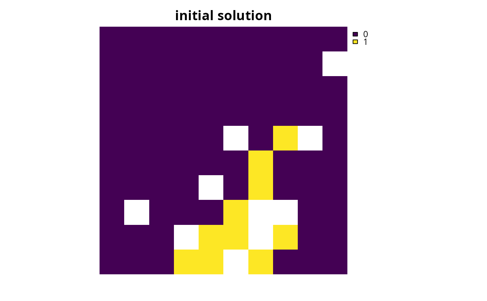
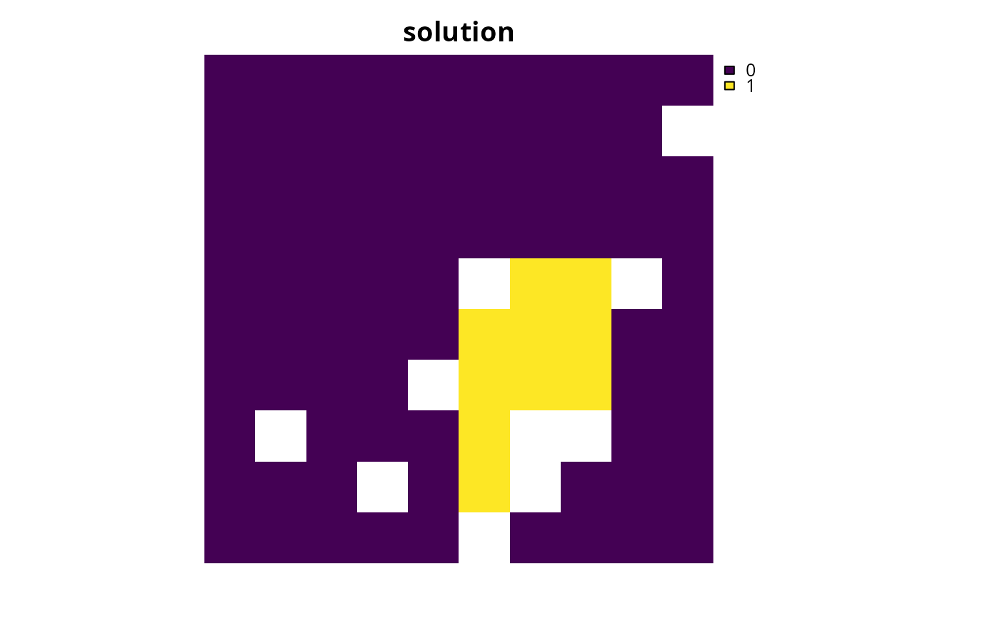

Add minimum penalties objective
Source:R/add_min_penalties_objective.R
add_min_penalties_objective.RdSet the objective of a conservation planning problem to only minimize the penalties added to the problem, whilst ensuring that all targets are met and the cost of the solution does not exceed a budget. This objective is useful when using a hierarchical approach for multi-objective optimization.
Arguments
- x
problem()object.- budget
numericvalue specifying the maximum expenditure of the prioritization. For problems with multiple zones, the argument tobudgetcan be (i) a singlenumericvalue to specify a single budget for the entire solution or (ii) anumericvector to specify a separate budget for each management zone.
Value
An updated problem() object with the objective added to it.
Details
The minimum penalty objective is designed to be used with problems
that have penalties (see penalties for details). It can be used
to generate solutions that focus entirely on minimizing the penalties,
whilst ensuring that certain constraints are met.
This is is useful when performing multi-objective optimization using a
hierarchical approach (see examples below). Although previous versions of the
package recommended using the minimum set objective (i.e.,
add_min_set_objective()) with zero costs and linear constraints for this
purpose, the minimum penalty objective provides a dedicated objective
for performing hierarchical multi-objective optimization.
Mathematical formulation
This objective can be expressed mathematically for a set of planning units (\(I\) indexed by \(i\)) and a set of features (\(J\) indexed by \(j\)) as:
$$\mathit{Minimize} \space 0 \\ \mathit{subject \space to} \\ \sum_{i = 1}^{I} x_i r_{ij} \geq T_j \space \forall \space j \in J \\ \sum_{i = 1}^{I} x_i c_i \leq B$$
Here, \(x_i\) is the decisions variable (e.g.,
specifying whether planning unit \(i\) has been selected (1) or not
(0)), \(c_i\) is the cost of planning unit \(i\),
\(r_{ij}\) is the amount of feature \(j\) in planning unit
\(i\), and \(T_j\) is the target for feature \(j\). Since
the objective is to minimize zero, this function does not actually provide
any criteria to compare competing solutions. As such, when used in
conjunction with a penalty function (see penalties), only the penalty
(e.g., add_boundary_penalties()) will be used to compare competing
solutions during optimization.
See also
See objectives for an overview of all functions for adding objectives. Also see targets for an overview of all functions for adding targets. Additionally, see penalties for an overview of all functions for adding penalties.
Other functions for adding objectives:
add_max_cover_objective(),
add_max_features_objective(),
add_max_phylo_div_objective(),
add_max_phylo_end_objective(),
add_max_utility_objective(),
add_min_largest_shortfall_objective(),
add_min_set_objective(),
add_min_shortfall_objective()
Examples
# \dontrun{
# set seed for reproducibility
set.seed(500)
# load data
sim_pu_raster <- get_sim_pu_raster()
sim_features <- get_sim_features()
sim_zones_pu_raster <- get_sim_zones_pu_raster()
sim_zones_features <- get_sim_zones_features()
# create initial problem with minimum set objective
p1 <-
problem(sim_pu_raster, sim_features) %>%
add_min_set_objective() %>%
add_relative_targets(0.1) %>%
add_binary_decisions() %>%
add_default_solver(verbose = FALSE)
# solve initial problem
s1 <- solve(p1)
# plot initial solution
plot(s1, main = "initial solution", axes = FALSE)

# calculate total cost of initial solution
c1 <- eval_cost_summary(p1, s1)
# since the solution is spatially fragmented, we will now use
# a hierarchical multi-objective optimization approach to reduce
# spatial fragmentation
# calculate budget for new prioritization based on cost of initial solution,
# this budget will specify that we are willing to accept a 10%
# increase in the total cost of the solution to minimize fragmentation
b <- c1$cost[[1]] * 1.1
# create problem with minimum penalty objective using the budget and
# boundary penalties to reduce spatial fragmentation
#
# note that although we use a penalty value of 0.01 as a placeholder,
# any penalty value would give the same result since the optimization
# process is focused entirely on the boundary penalties
p2 <-
problem(sim_pu_raster, sim_features) %>%
add_min_penalties_objective(budget = b) %>%
add_boundary_penalties(penalty = 0.001) %>%
add_relative_targets(0.1) %>%
add_binary_decisions() %>%
add_default_solver(verbose = FALSE)
# solve problem with minimum penalty objective
s2 <- solve(p2)
# plot solution with minimum penalty objective
plot(s2, main = "solution", axes = FALSE)

# }